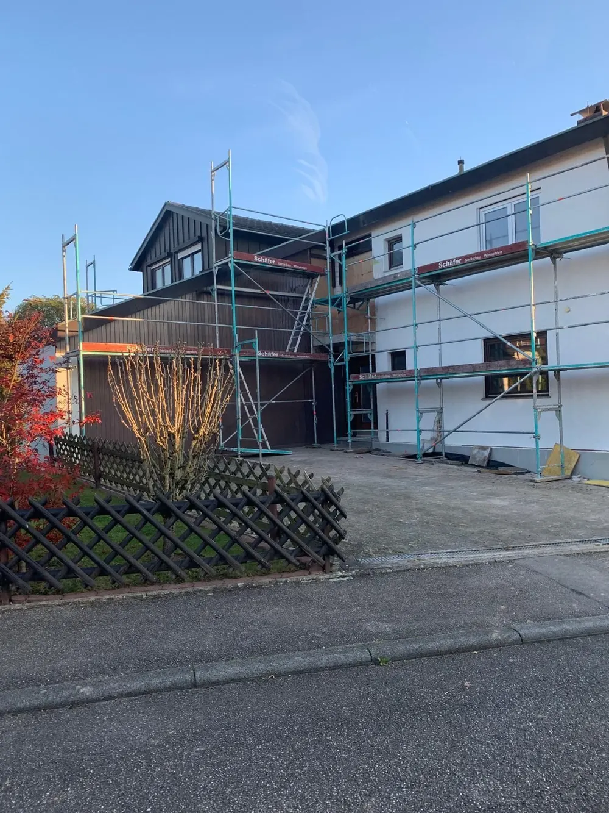
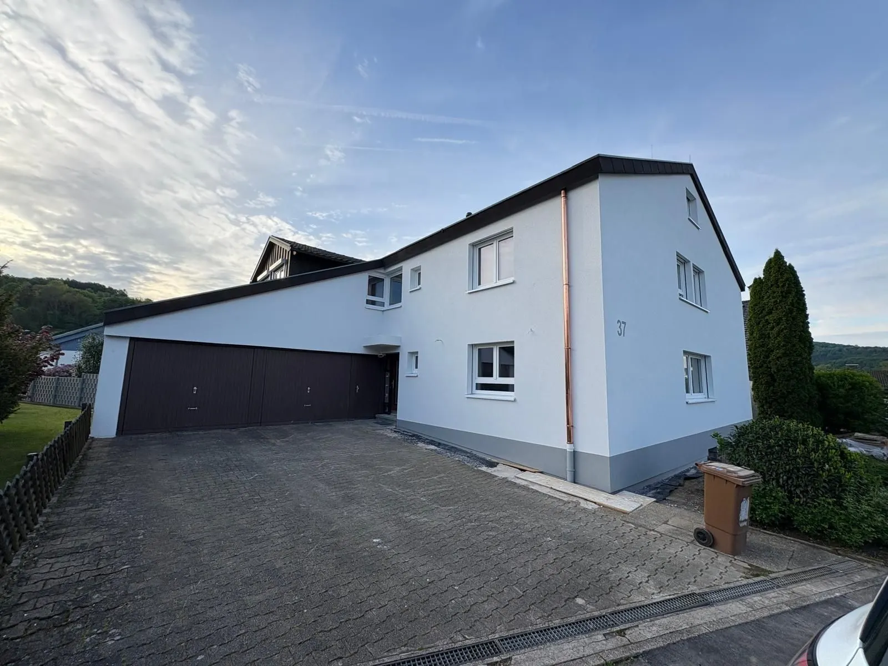
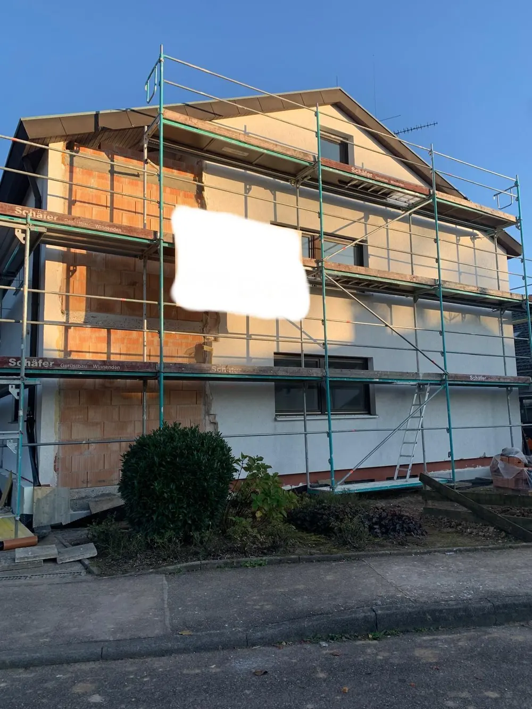
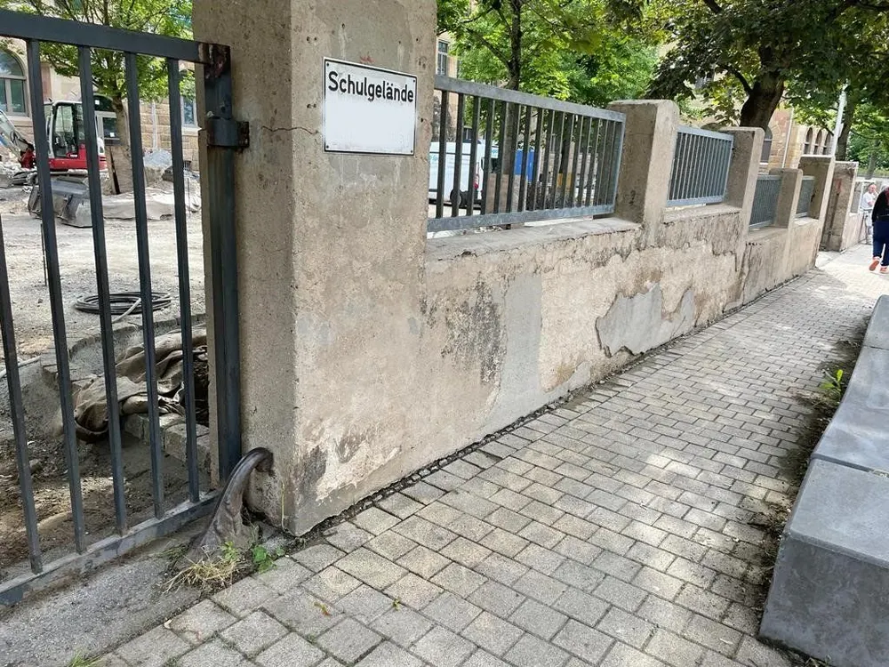
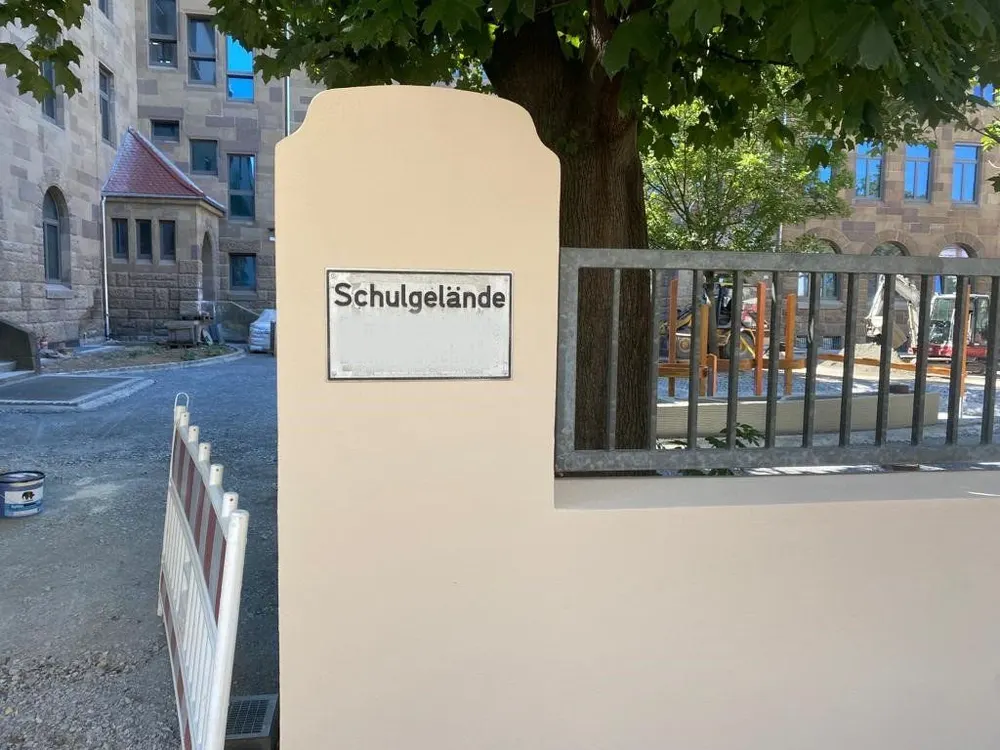
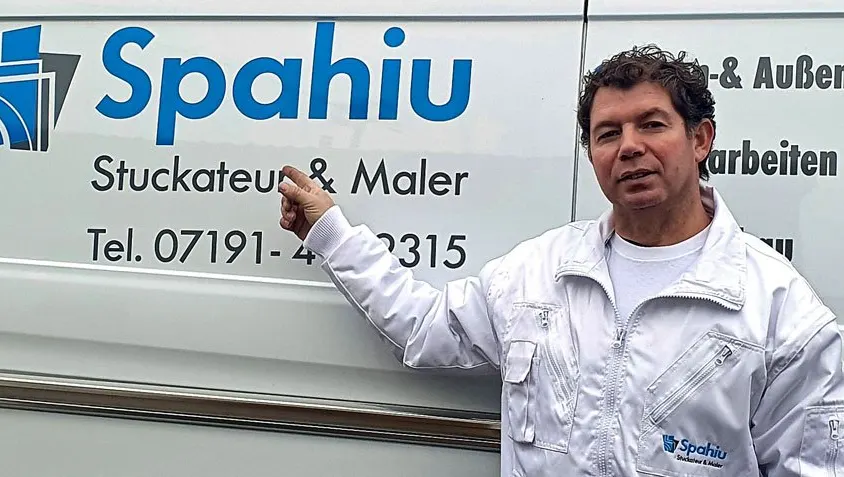

Stuckateur & Maler · Allmersbach im Tal
Von der Rohwand bis zur letzten Farbschicht.
Familienbetrieb seit 2013. Wir verputzen, dämmen, streichen und bauen trocken: im Altbau und im Neubau, für Privatleute und Gewerbe. Vom Angebot bis zur Abnahme sprechen Sie mit denselben Leuten. Und wir hinterlassen die Baustelle sauber.

Vorher
Fertig
Vorher Fertig
Fertig Fertig
Fertig
Vorher
Fertig
Sauberkeit zuerst
Sauber arbeiten heißt: erst abdecken, dann anfangen.
Wege, Böden und Pflanzen am Haus werden geschützt, bevor das erste Gerüstteil steht. Das kostet am Anfang Zeit und spart Ihnen hinterher das Putzen.
- Folie auf Wegen und Böden
- Pflanzen am Haus werden geschützt
- Das Ergebnis sieht man: Schulmauer, Fassade, Flur
Leistungen
Was auf unseren Transportern steht, machen wir auch.
Innen- & Außenputz
Neuer Putz auf Rohbau, Ausbesserung am Altbau, Fassaden mit Struktur und Sockel.
02Wärmedämmung
Fassadendämmung, damit das Haus im Winter weniger Heizung braucht.
03Malerarbeiten
Wände, Decken, Flure und Fassaden, innen wie außen.
04Altbausanierung
Mauern, Bäder und ganze Häuser, bei denen erst geprüft wird, was bleiben kann.
05Trockenbau
Abgehängte Decken, neue Wände, Flure und Bäder.
Projekte
Vorher und nachher, von uns gemacht.
Wohnhaus, rundum neu verputzt. Gerüst, neuer Putz, grauer Sockel, Garagenseite neu gestrichen.
Mauer am Schulgelände. Aus bröckelndem Beton wurde ein glatter, sandfarbener Pfeiler.

Der Betrieb
Ajdar Spahiu hat 2013 angefangen. Heute stehen mehrere Transporter mit dem Logo auf der Straße.
Wer bei uns anfragt, bekommt keinen Callcenter-Rückruf. Sie sind beim Gespräch zum Angebot dabei, erfahren während der Arbeit, wo wir stehen, und gehen bei der Abnahme mit uns durchs Haus. Sind Sie zufrieden, sind wir es auch. Mehr über den Betrieb
Kontakt
Rufen Sie an oder schreiben Sie uns, wir melden uns.
07191 4939315Ein Termin im Büro in Allmersbach ist nach Absprache auch samstags möglich.
- Adresse
- Spahiu Stuckateur & Maler GmbH
Schönblick 7
71573 Allmersbach im Tal - info@spahiu-stuckateur.de
- Fax
- 07191 4934655
- Social
- InstagramFacebook